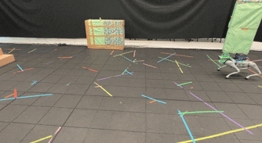

MuJoCo Playground¶
This instruction explains how to train a Unitree Go2 quadruped to track commanded velocities using Reinforcement Learning (RL) in MuJoCo Playground. To follow the steps, refer to our customized open-source repository.
Task: Track body-frame planar velocity commands: \(\mathbf{c} = [v_x^c, v_y^c, \omega_z^c]\)
where \(v_x\) and \(v_y\) are the commanded linear velocities in the robot’s body frame, and \(\omega_z\) is the commanded yaw rate.
RL algorithm: Proximal Policy Optimization (PPO)
This instruction uses the Go2JoystickFlatTerrain environment and the RSL-RL implementation of PPO through the learning/train_rsl_rl.py training script.
Note
All parameter values and configuration details presented in this document are set for the current environment and training setup. They should not be interpreted as generic defaults for Unitree Go2 locomotion tasks.
Policy and environment setup¶
Observation Space¶
Actor Observation:
The actor receives proprioception information, each frame contains 45-dimensional observation:
| Term | Dimension | Noise amplitude |
|---|---|---|
| Local angular velocity | 3 | +/-0.2 |
| Projected gravity | 3 | +/-0.05 |
| Velocity commands | 3 | None |
| Joint position bias | 12 | +/-0.01 |
| Joint velocity | 12 | +/-0.01 |
| Previous actions | 12 | None |
Noise is uniform and independently sampled for each new frame.
Actor input: Observation history of concatenating 10 frames (450-dimensional). It supplies short-term temporal context to the feed-forward actor.
Critic Observation:
The critic receives the uncorrupted current actor frame and privileged information:
| Term | Dimension |
|---|---|
| Current actor observation | 45 |
| Local linear velocity | 3 |
| Base height above ground | 1 |
Critic input: 49-dimensional and contains no history.
Action Space¶
The policy action is a normalized 12-dimensional vector, one value per
actuated Go2 joint in MuJoCo model order: \(\mathbf{a}_t \in [-1, 1]^{12}\).
After rollout perturbation noise and clipping, the environment computes:
where 0.5 is action scale.
Note: The action is not a torque command. It is converted to a joint-position target,
and the MuJoCo position actuators apply the configured PD gains.
See the
MuJoCo actuator documentation
for the underlying actuation model.
Rewards¶
At each control step, the environment computes
where \(r_i\) and \(s_i\) represent each reward term and its scale, \(\Delta t\) is the control step.
The full rewards, reward scales and definitions are listed below:
| Term | Scale | Definition |
|---|---|---|
tracking_lin_vel |
+1.0 |
\(\exp\left(-\lVert \mathbf{v}_{xy}^{c}-\mathbf{v}_{xy}^{b}\rVert_2^2/0.25\right)\) |
tracking_ang_vel |
+1.0 |
\(\exp\left(-\left(\omega_z^{c}-\omega_z^{b}\right)^2/0.25\right)\) |
height |
+1.0 |
\(\exp\left(-10 \cdot \left(z_b-0.35\right)^2\right)\) |
lin_vel_z |
-1.5 |
\(\left(v_z^b\right)^2\) |
action_rate |
-0.05 |
\(\lVert \mathbf{a}_t-\mathbf{a}_{t-1}\rVert_2^2\) |
action |
-0.1 |
\(\lVert \mathbf{a}_t\rVert_2^2\) |
ang_vel_xy |
-0.05 |
\(\lVert \boldsymbol{\omega}_{xy}^{b}\rVert_2^2\) |
orientation |
-5.0 |
\(\lVert \mathbf{g}_{xy}^{b}\rVert_2^2\), \(\mathbf{g}^{b}\) is body-frame projected gravity |
pose |
+1.2 |
\(\exp\left(-\sum_{j=1}^{12}w_j\left(q_j-q_j^{\mathrm{default}}\right)^2\right), \mathbf{w}=[1,1,0.1]^{\times 4}\) |
stand_still |
-1.0 |
\(\mathbb{1}_{\lVert\mathbf{c}\rVert_2<0.01}\sum_{j=1}^{12}\left\|q_j-q_j^{\mathrm{default}}\right\|\) |
energy |
-0.001 |
\(\sum_{j=1}^{12}\left \| \dot{q}_j\right\| \cdot \left\|\tau_j\right\|\) |
Domain Randomization¶
Domain randomization is used to reduce overfitting, improve robustness, and prepare the controller for deployment conditions.
| Quantity | Distribution |
|---|---|
| Geometry friction scale | U(0.5, 2.0) |
| Body mass and inertia scale | U(0.85, 1.15) |
Proportional gain Kp |
U(25.0, 45.0) |
Derivative gain Kd |
U(0.3, 1.6) |
| COM offset | x/y +/-0.05 m, z +/-0.04 m |
| External Push | U(-1.0, 1.0) |
Environment Configuration¶
| Parameter | Value |
|---|---|
Physics step, sim_dt |
0.004 s (250 Hz) |
Control step, ctrl_dt |
0.02 s (50 Hz) |
| Physics substeps per action | 5 |
| Nominal episode length | 5,000 control steps (100 s) |
| Sampled time limit | 3,750 - 6,250 steps (75 - 125 s) |
| Nominal PD gains | Kp = 35.0, Kd = 0.5 |
| Soft joint-limit factor | 0.95 |
PPO Configuration¶
| Parameter | Value |
|---|---|
| Parallel environments | 2,048 |
| Steps per environment and iteration | 24 |
| Samples per iteration | 49,152 |
| Actor hidden dimensions | [512, 256, 128] |
| Critic hidden dimensions | [512, 256, 128] |
| Initial Gaussian action standard deviation | 0.5 |
| PPO clip parameter | 0.2 |
Discount factor gamma |
0.99 |
GAE parameter lambda |
0.95 |
| Learning rate | 1e-3 |
| Learning-rate schedule | adaptive; target KL 0.01 |
| Learning epochs per iteration | 10 |
| Mini-batches per epoch | 4 |
| Samples per mini-batch | 12,288 |
| Value-loss coefficient | 1.0 |
| Entropy coefficient | 0.01 |
| Maximum gradient norm | 1.0 |
Installation¶
Install our customized open-sourced repository and required dependencies.
Here we create a conda virtual environment for this task.
conda create -n env_mujocoplayground python=3.12 -y
conda activate env_mujocoplayground # make sure environment is always activated in following commands
cd leg-mujoco
pip install -e . # install Go2 customized MuJoCo Playground
# install required dependencies
pip install rsl-rl-lib wandb
Train the policy¶
Play the policy¶
It is necessary to speficy play-only, load_run_name, and checkpoint_num (optional).
train-rsl-ppo \
--env_name=Go2JoystickFlatTerrain \
--play_only \
--load_run_name=<run_name> \
--checkpoint_num=<number>
checkpoint_num is not specified, the latest checkpoint is automatically chosen.
Export policy in ONNX format¶
This is for Sim-to-Sim validation and real-world deployment, we use ONNX format to deploy.
train-rsl-ppo \
--env_name=Go2JoystickFlatTerrain \
--export_onnx_only \
--load_run_name=<run_name> \
--checkpoint_num=<number>
Sim-to-Sim Validation¶
Please refer to Isaaclab Training Sim-to-Sim Deployment with MuJoCo section for details.
Real-world Deployment¶
The ROS 2/Unitree deployment code lives in deploy and runs exported ONNX policies for Go2JoystickFlatTerrain. See deploy/README.md for setup, configuration, sim-to-sim, and real-robot notes.

- Export Policy into ONNX format file and move to
deploy/model/. - Check and revise
config.yaml.
In real robot deployment, some parameters (e.g.KpandKd) need to be adjusted based on different robot.
Set the correct exported policy path: For the real robot, enableunitree_services: Note: This makes the node call UnitreeSportClient::StandDown()andMotionSwitcherClient::ReleaseMode()before low-level control. For MuJoCo sim-to-sim validation, setunitree_servicesto befalse.
The ROS2 node expects:
During policy control, the ROS2 node publishes two 12-joint messages in Unitree SDK motor order (FR,FL,RR,RL, withhip/thigh/calffor each leg):
- Build the workspace.
Source the ROS 2 and Unitree SDK environment first, then:
Note: Sourceinstall/share/go2_joystick_deploy/local_setup.bashin every terminal that uses ROS CLI tools with the customJointAngularPositionsmessage. - Run With Unitree MuJoCo
In another terminal, run the existing command publisher:
- Real Robot Notes
Hardware setup details depend on the onboard computer, network interface, Unitree SDK installation, and robot safety procedure; for a fuller hardware reference, see REASAN.
On shutdown orCtrl+C, the node interpolates tosit_anglesand then sends a damping command.